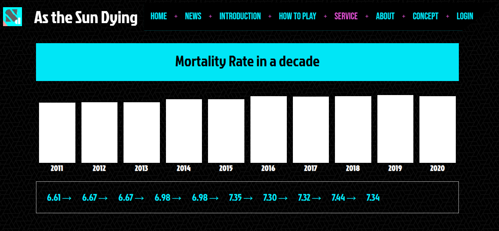

Main
首先是配色，網頁的色彩主要為兩種
#00E6F6
#00E6F6
選擇這兩種顏色是因為，這次觸及的主題有牽涉到遊戲、未來科技
所以就選用了被稱作「賽博朋克風」的配色
然後是logo與ico，都是自己畫的，在文書機上畫這些，我盡力了。
然後是...封面的原圖是大安捷運站出來後隨手拍的，我認為挺好看
就把他稍微(?調了一下色調，有種未來風格(應該
接著是底下的元素，左邊是一些遊戲數據統計，右邊是玩家排行榜
然後我也改了卷軸顏色，感覺較為契合。
另外，若點選最上層導覽列的標題，可回到index.html

再來，網頁上有不少元素皆使用了bootstrap的card
原因是便於排版，也簡單明瞭
還有若圖片多的時候，也會使用輪播來統整版面
然後外星人來自的星球名稱=EARTH的顛倒過來
Others
因為主要是保險相關的說明，因此這邊使用折疊式選單來製作
登入畫面中的註冊和忘記密碼是可使用的連結

若註冊頁面的密碼輸入不相符，會停在原頁
反選的色彩有做更改

用圖表整理了近十年死亡率，近年有上升的趨勢

最後是畫廊中的三張圖，其中兩張的原圖地點為元智五館
另外一張是我用做的3D圖，原本要當首頁圖，但遠端自家電腦速度太慢
因此有一些材質貼圖沒貼好，所以就拿來放畫廊了。
Summary
趕上了QQQQQ
此次網頁的製作核心為bootstrap，
有使用到其方便的網格排版、卡片、輪播、導覽列等等，
也有使用到像是charts.css之類的插件，或是參考大神的寫法
然後為什麼很多地方都用英文的原因主要是因為，
我沒找到比較符合主題的中文字型，不是我非常international
雖說我認為在很多地方仍做的不是很理想，總有法跟不上技術的感慨(?
但整體來說還是做得算很愉悅。
在宿舍打個網頁，寫累了就直接休息
怎麼想都比遊戲還刺激。
以上